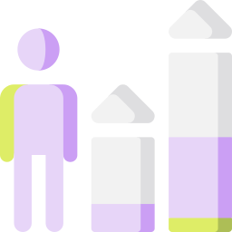
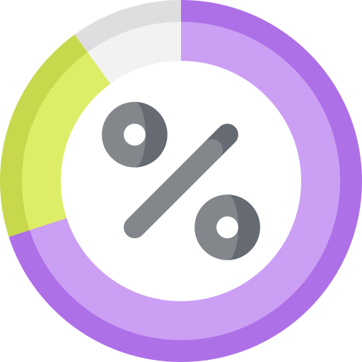
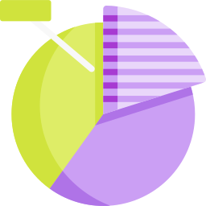

Silvana Guardia
Business Intelligence
Transformo datos en insights valiosos para optimizar la toma de decisiones estratégicas
Transformo datos en insights valiosos para optimizar la toma de decisiones estratégicas
Instituto Sise - Estudiante 2025
Platzi - 2024
Programa one5 - Alura/Oracle - 2023
Convierto datos en ideas clave para mejores decisiones.
Aseguro la integridad y disponibilidad de tu información.
Transformo datos en informes útiles.
Creo gráficos claros para entender datos complejos.

Este proyecto consiste en un análisis detallado de la rotación de personal, utilizando un conjunto de datos de Kaggle. El objetivo principal fue identificar patrones y factores clave que contribuyen a la rotación de empleados para ayudar al departamento de Recursos Humanos a desarrollar estrategias de retención más efectivas.


Este proyecto detalla la creación de un Dashboard de Super Store interactivo, enfocado en el análisis de ventas y rendimiento. Se realizó una fase de limpieza y preparación de datos utilizando SQL para asegurar la calidad y consistencia de la información antes de la visualización en Power BI.

